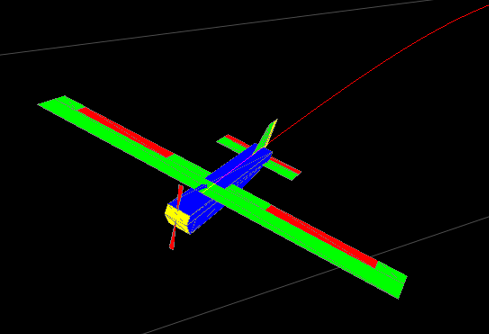

UAV Sim
D.O.R.A. — UAV Flight Sim
Simulation of fixed-wing UAV flight dynamics with realistic wind models and advanced control systems for validation and testing.
Project details
- Objective
- Custom UAV flight sim to explore dynamics, control, and estimation.
- Integrated Dryden wind, PID loops, and Kalman filters.
- Challenges
- Maintaining numerical stability under turbulence and strong inputs.
- Real-time coupling of wind, estimation, and control modules.
- Tuning for smooth line-following and steady flight.
- Results & Contributions
- Implemented Dryden turbulence, Kalman filters, and PID architecture.
- Animated control surfaces for visualization.
- Built a line-following autopilot robust to gusts/noise.
- Delivered a modular testbed for control & estimation research.